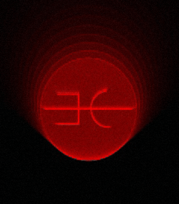

Istruzioni
Quando appare questo simbolo accompagnato da una domanda puoi interagire con la perfomance e scrivere. durante la performance non uscire da questo sito. Grazie

Quando appare questo simbolo accompagnato da una domanda puoi interagire con la perfomance e scrivere. durante la performance non uscire da questo sito. Grazie